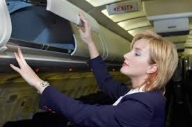

|
ABOUT US REGISTRATION LOGIN PAGE FEEDBACK FORM CONTACT US AUSTRAILIA SINGAPUR |

As of 30 October 2007 the total fleet size of commercial airlines in India was 439. In 1994 the Air Corporation Act of 1953 was repealed with a view to remove monopoly of air corporations on scheduled services, enable private airlines to operate scheduled service, convert Indian Airlines and Air India to limited company and enable private participation in the national carriers.However, beginning 1990 private airline companies were allowed to operate air taxi services, resulting in the establishment of Jet Airways and Air Sahara. These changes in the Indian aviation policies resulted in the increase of the share of private airline operators in domestic passenger carriage to 68.5% in 2005 from 0.4 of 1991. Operating an airport in today’s environment is akin to running a small city. For example, moving assets in a timely manner and knowing the impacts of decisions on servicelevels and the bottom line are critical. SITA's Airport Management solution (AMS) gives you greater control over your operations, simplifying their complexity and improving profitability. Whether you operate multiple airports or just one, AMS gives you the flexibility to adapt to the demands of the day. An airline is a company that provides air transport services for traveling passengers and freight. Airlines lease or own their aircraft with which to supply these services and may form partnerships or alliances with other airlines for mutual benefit. Generally, airline companies are recognized with an air operating certificate or license issued by a governmental aviation body. Airlines vary from those with a single aircraft carrying mail or cargo, through full-service international airlines operating hundreds of aircraft. Airline services can be categorized as being intercontinental, intra-continental, domestic, regional, or international, and may be operated as scheduled services or charters. |
© by NIIT Solapur